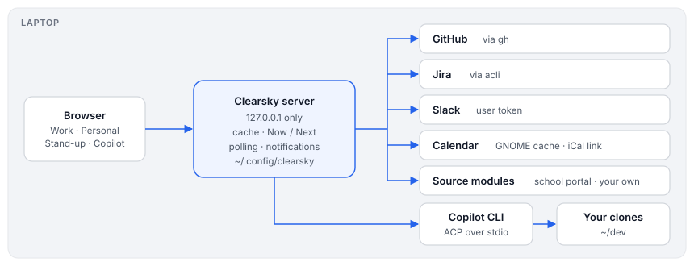

Written 2026-10-29. This covers the shape of the system. The README covers setup and use.
Clearsky is one local page that shows what needs Morten's attention at work, and next to it a few personal things:
It runs on the laptop, uses the logins already there, has no dependencies beyond Node 22, and sends nothing anywhere except to the services it reads.

| Part | Where | What it does |
|---|---|---|
| Server | bin/clearsky.mjs | HTTP on 127.0.0.1, fetches and caches sources, plans Now / Next, polls for notifications, talks to Copilot |
| Page | web/index.html | A menu and one work area: the Inbox, an item in full, Copilot chats, Calendar, Stand-up and a page per extra source; one file, no build step |
| Settings | web/settings.html, lib/settings.mjs | writes ~/.config/clearsky/.env (mode 600); never sends saved secrets back |
| Sources | built in, plus lib/sources/*.mjs and ~/.config/clearsky/sources/*.mjs | each one fetches one service; see the contract in lib/sources.mjs |
| State | lib/state.mjs → ~/.config/clearsky/state.json | done, muted and dismissed items, what was already notified, session links |
| Copilot | lib/acp.mjs, lib/copilot.mjs | the Copilot CLI over ACP (JSON-RPC on stdio), in every access mode |
| Calendar | lib/eds.mjs, lib/ics.mjs | GNOME's Evolution cache (SQLite) or an iCal link, parsed locally |
| Notifications | lib/notify.mjs | what's new since last time; desktop banners over D-Bus (gdbus), or the browser's |
GitHub (through gh), Jira (through acli, never direct REST tokens), Slack and the calendar are built in. Everything else is a source module with name, label, area (work or personal), settings, fetch(ctx) and optional hooks:
items: rows for its panel;attention: what should notify you when it's new;events: calendar entries; fyi: true events show but don't take your time;standup: lines for Yesterday and Today;detail and attachment: read an item in full inside Clearsky;login: a login started from Settings.The source's area decides its tab. Only the calendar mixes work and personal.
Files in ~/.config/clearsky/sources load only if Morten owns them and nobody else can write to them. A source that throws only breaks its own panel.
planNow() turns the calendar plus the work items into:
Events on a shared calendar (like Family) only take your time when you organised them, were invited, or your name is in the title. Calendars you hide neither show nor take time. Today's schedule draws the same data as a timeline.
The panel drives the Copilot CLI on the laptop in ACP mode, so sessions are Copilot's own:
inuse.<pid>.hold file.A first message carries a short dashboard summary plus any attached PRs or tickets, after a marker, so titles and links use only what you typed.
Sessions link to PRs and tickets in three ways:
A chat about a PR runs in your local clone of that repo.
Every access mode runs over ACP, so anything Copilot wants your OK for (each step in Ask, edits and commands in Assisted) shows as Allow/Deny. Copilot gets none of Clearsky's tokens, and skills never merge, approve, force-push or comment without asking.
Host headers (DNS rebinding).nosniff and a sandbox CSP.Remote access describes what would change to reach it from a phone.